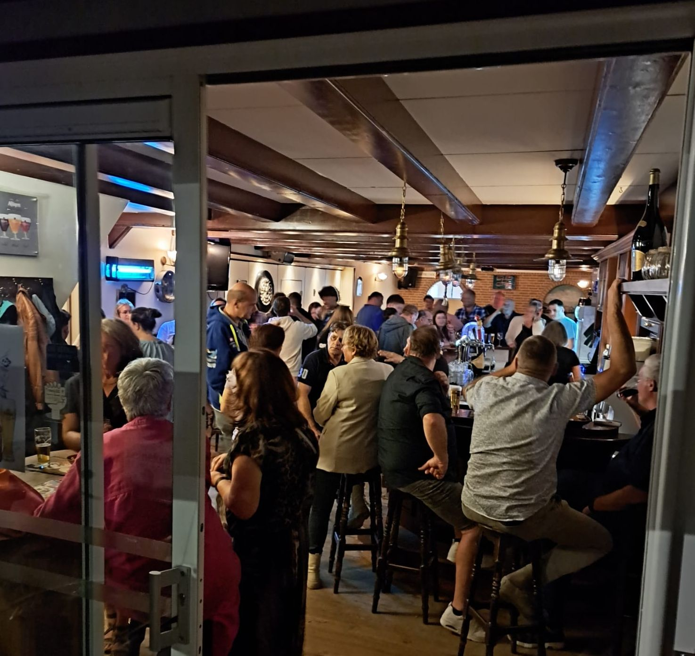
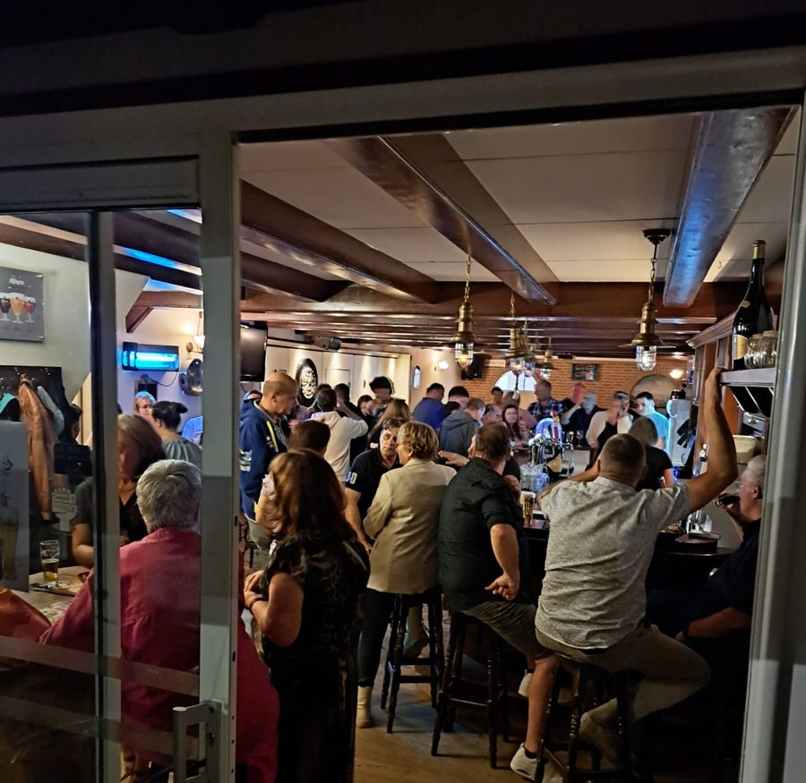
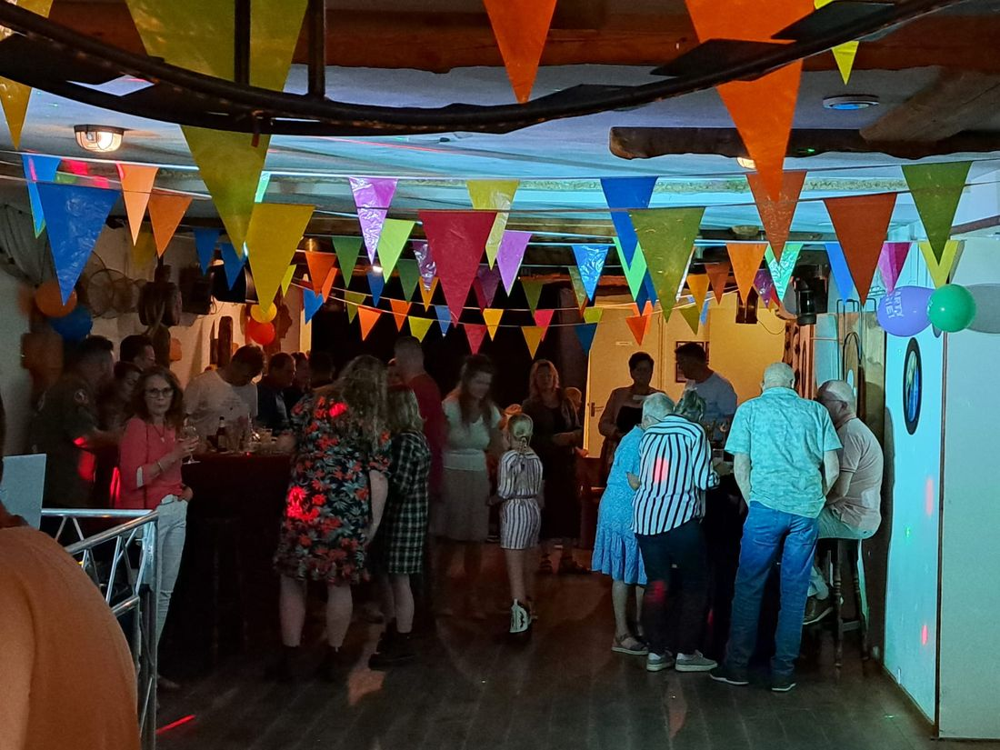
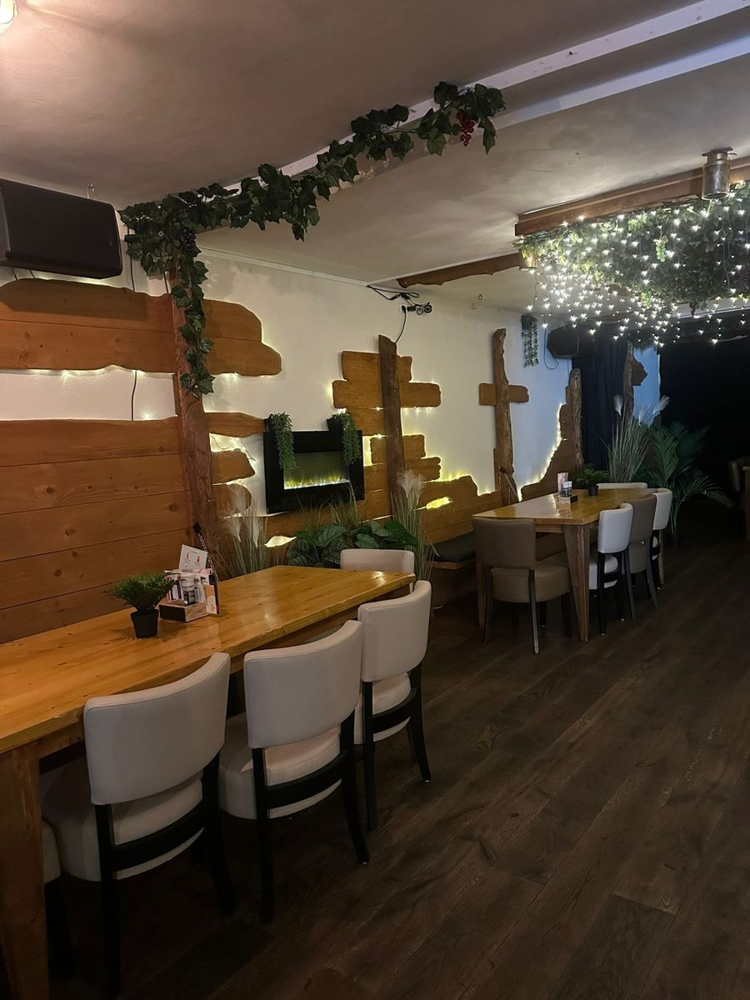
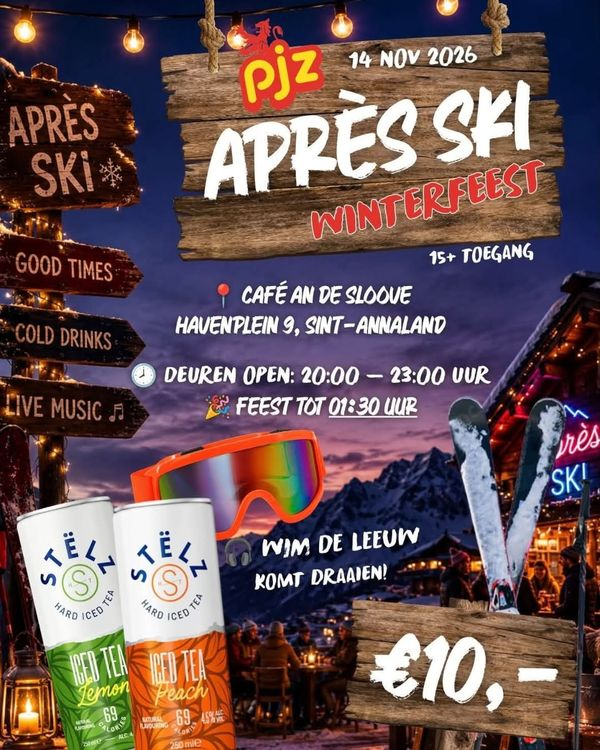

Lunch, diner of een borrel in Sint-Annaland. En heb je iets te vieren? Dan maken we er samen een feest van.
We werken met zoveel mogelijk lokale producten. Alle gerechten van de menukaart krijg je met friet en een frisse salade.
Ook voor een drankje: bier van de tap en op fles, wijn, craftbeers, cocktails en desserts.

Verjaardag, jubileum, reünie, trouw- of personeelsfeest: we verzorgen regelmatig feestjes, en bij grotere groepen kan het ook besloten. Jij geeft aan hoe je het wilt, wij regelen de rest.
Geen zin in elke dag visite? Vier het in één keer, ook op zondagmiddag.
Binnen onder de extra afzuiging, of bij mooi weer buiten op het terras. Samengesteld naar jouw keuze.
Meestal een combinatie van vlees en vis, vaak met een toetjesbuffet na.
Op woensdagmiddag in het café. Frietjes met snacks, bingo of karaoke: zeg het maar.
Met een groep de avond beginnen of afsluiten in een bruin café.
Samen met schietvereniging SSV Prinses Juliana: eerst schieten, daarna barbecueën bij ons.
Café an de Sloove is een echt bruin café, gerund door Mira en Egbert. Mira werkte hier al jaren voordat ze de zaak overnam. Doordeweeks komen veel mensen na het werk een borrel drinken, en er is regelmatig wat te doen, van poker tot après ski.
Op Havenplein 9 zat in 1828 al een herberg. Later heette het Café in den Handel, nu is het an de Sloove.

Heel gezellig voor een drankje!Nino via Google
Leuke zaak, gezellig terras en het eten is eenvoudig maar wel goed.Danny Lobbezoo via Google

Wil jij ook lekker feesten in ons après ski café? Zorg dan dat je op tijd kaartjes hebt.
Met Wim de Leeuw · 15+ · € 10,-
Volg ons op Facebook →Een tafel, een feest of een vraag over de kaart? Bel of app Mira.
| Maandag en dinsdag | Gesloten |
| Woensdag | 14.00 – 20.00 uur |
| Donderdag | 12.00 – 20.00 uur |
| Vrijdag | 12.00 – 00.00 uur |
| Zaterdag | 12.00 – 02.00 uur |
| Zondag | Gesloten |
| Maandag en dinsdag | 12.00 – 20.00 uur |
| Woensdag | 12.00 – 21.00 uur |
| Donderdag | 12.00 – 22.00 uur |
| Vrijdag | 12.00 – 00.00 uur |
| Zaterdag | 12.00 – 02.00 uur |
| Zondag | Gesloten |